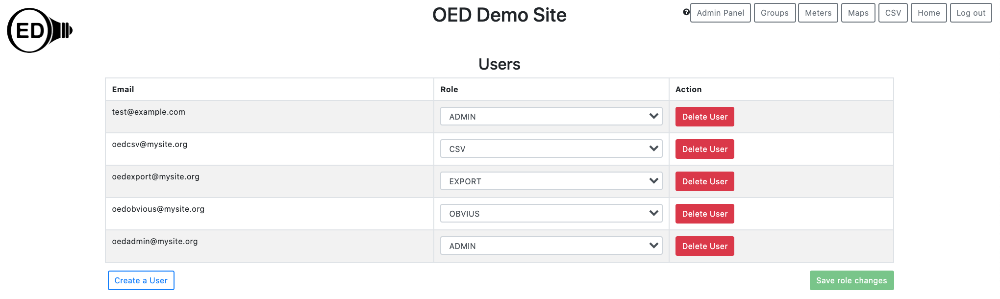

OED supports the creation of user roles that allow for:
The main OED admin preferences page (see admin help) has a button ("Users" under the "Manage:" tag) that takes an admin to the user control page as shown in the next figure.
This example figure shows four users of oedcsv@mysite.org, oedexport@mysite.org, oedobvius@mysite.org and oedadmin@mysite.org with the roles of CSV, EXPORT, OBVIUS and ADMIN, respectively. A user can be removed from OED by clicking the "Delete User" button that is in red. Note this action cannot be undone and happens right away. The only exception is that you cannot delete an admin user if they are the only one in the OED system. You must always have at least one admin user on a site. For all roles, it is fine to have multiple users for that role (not shown in figure).
A new user can be created by clicking the blue "Create a User" button where a new page will open. You type in the "Email", "Password" and "Confirm password" in the boxes below those titles. The role is set by selecting from the dropdown menu under the "Role" title. The default role is ADMIN unless another is selected. Once all informatin is entered then click the "Submit new user" button at the bottom of the page. If successful, then a notice will temporarily show in the top, right of the page and you will be returned to the main user page. If there is an issue then a message will tell you the problem. If you wish to cancel entering a new user then either hit the web browser back button to return to the user page or click another button to go to a different OED page. The next figure shows the page after the information was entered to add the CSV role user described above.

You can change the role of the user by using the dropdown menu in the "Roles" column to select a new role for the user in the row of the table. You must click the green "Submit role changes" button at bottom, right of the page for any changes to take effect. This button will go from grayed out green to regular green when a change needs to be saved. If you do not save your change(s) then they will be lost when you leave this page.
None at this time.